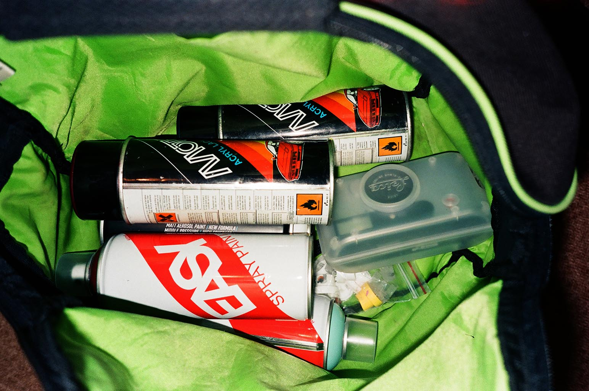
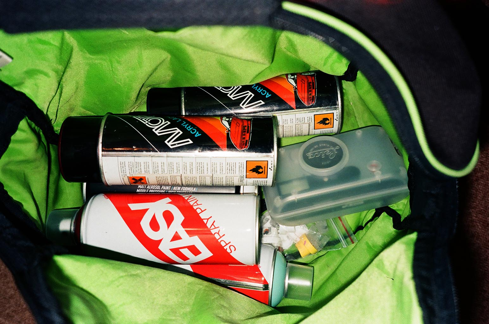

Проведя не малую часть жизни в главном городе Республики Башкортостан посчастливилось узнать огромное количество разных людей, по моему личному мнению город Уфа - это закрытое , с первого взгляда очень сплоченное комьюнити, имеющее своих «старших» и «молодых», своих звёзд и тех, о ком не принято говорить в слух.
Среди активных ребят в уличной культуре есть простое понятие, которое объединяет всех людей, кто в этой культуре варится — «Тусовка». Тусовка — это огромное количество людей, знакомых друг с другом в лицо. Люди имеющие абсолютно разные цели , увлечения и интересы, но держащиеся вместе. Услышав от знакомого «он из тусовки» все сразу понимают о чем идёт речь.
Дима Migr — если не самый, то один из самых ярких представителей «старшей» тусовки. Человек стоявший у зарождения граффити культуры в Уфе, тот парень, что смог не только сделать огромное количество рисунков в городе, но и зафиксировать все это на пленку , в то время, когда цифровая техника только-только начала попадать к людям в огромных количествах.
Участник одного из самых старых объединений Уфы - RESISTANCE (RST crew).
На моей памяти есть не много людей в Уфе ,имеющих плёночные архивы с тех времён, когда были пропшиканы первые баллончики, пробиты первые расклады на пригородный транспорт, первая вылазка на теггинг и тд. Именно по этой причине сегодня мы зададим Migr'у несколько вопросов, покажем те самые снимки и узнаем, что же скрывается за понятием «старший» и об обстановке в наши дни.
 

Дима, здравствуй, расскажи как произошло твоё знакомство с граффити? Чем для тебя на тот момент являлось это увлечение?
Привет! Моё знакомство с граффити культурой произошло в 2003-04 годах. Я 13 летний пацан учился в школе, интернета на тот момент не было. Моя старшая сестра слушала хип-хоп и тусовалась с огромным количеством людей «в теме». Панки рокеры скейтеры рэперы перемещались по всему городу, пили катались в общем вели себя как вся неформальная молодежь. Помню, как я гнал на сестру по началу, когда она начала слушать музыку где употреблялся мат, но когда она уходила из дома я включал те самые сборники Hip-Hop INFO, ДЭЦЛа и прочее да по громче. На кассетах этих я и увидел граффити рисунки, начал срисовывать. Друзья в школе просили нарисовать им такой же рисунок в дневнике на последних страницах. Потом как-то случайно я узнал что у нас в школе учится один парень из старших классов который тоже рисует. Мы познакомились, нашли общий язык, так и началось моё уже более серьёзное занятие этой сферой хип-хопа. Мы собирали из войлока и всяких баночек вандалы заправляли их тушью и гуляли писали свои ники. Мой первый ник был DIKTATOR, смешно вспоминать. Тогда я посмотрел первые VHS кассеты с граффити видосами, это были «FX The Video» и «MONSTERS OF ART». FX оригинала у меня не осталось а вот кассета MOAS хранится до сих пор дома в оригинальной упаковке, для меня это как реликвия. Я просто охреневал от происходящего там за бугром, сколько у них банок и почему краска не течёт. А мы могли себе позволить только Touch’n’Tone и ABRO, она была жидкая и не получалось рисовать как в тех видосах. На тот момент я естественно не представлял что это занятие будет сопровождать всю мою жизнь. Это было очень интересно, хотелось рисовать такие же крутые рисунки и чтобы о тебе узнали все. Это было необычно. На тот момент я особо не выбирался с района но друг рассказывал что в городе есть ребята которые объединились в команды NW1 и RESIST. Помню как я однажды сказал себе что хочу быть крутым граффитчиком и быть в составе RST. Ну а дальше были новые знакомства и тусовки, новые команды и новые куски.
Как произошло твоё знакомство с пленочным аппаратом и почему желание фиксировать происходящие склонилось именно к этому способу?
В детстве я всё разбирал чтобы посмотреть как это всё устроено, но не всегда получалось собрать это обратно. Вот так лет в 10 я познакомился со строением фотоаппарата, это был ФЭД-2. На него было снято много кадров жизни нашей семьи. А вот первую свою плёнку я отснял в 2010. Дома оставалась не разобранная смена 8м. Помню я купил катушку FUJI в фотосалоне перед поездкой в горы. Это была осень. То, что получилось на выходе потрясло меня, вроде обычная пластиковая коробочка, но какие я увидел цвета! Тогда то во мне и зародилась любовь к плёнке. На тот момент у меня был цифровик Panasonic, он снимал достаточно неплохо, но это была цифра, а плёнка это для души и для того удовольствия от ожидания что же там получится. Заканчивая плёнку я летел в фотосалон на другой конец города, ждал проявку 30 минут чтобы наконец то уже посмотреть, что там получилось.
Расскажи об уфимском комьюнити , каким оно является для тебя? Что по твоему мнению повлияло на людей, которых знает большое количество людей за пределами города?
Уфимское комьюнити как и наверное и в других городах оживает в основном летом. Зима проходит в локальных тусовках. Уфа достаточно спокойный город со своим размеренным ритмом жизни. Пару тройку человек что-то делают в своих студиях, едут из спокойной Уфы в столицу и это потом взрывает Россию. Я говорю здесь про музыку. Уфа богата на неординарных личностей. Но здесь скучно, и они едут искать себя там, где это попрёт. Москва Питер. Какие-то другие сферы я бы не выделил, может я просто мало этим интересуюсь, но все чаще ждут что вот кто-то что-то должен сделать. Но в последнее время я наблюдаю новые проекты наших уфимских активистов, и это очень радует! В сфере граффити Уфа и не мертва и не жива, как то всё затихло, но человек 10 может меньше не сбавляют напор.
Считаешь ли ты , что у плёночной фотографии в Уфе есть будущее? Что можешь сказать об этом на сегодняшний день? (Ну про молодняк и хайп на пленку и как это отразилось на Уфе)
У плёночной фотографии есть будущее везде пока не перестали производить плёнку, всё равно да кому-нибудь будет интересно как это работает и что из этого можно сотворить. Плёнка это материал для творчества. Хоть сейчас и полно приложений для телефона с эффектами, но народ будет снимать на аналог еще долго.
На сколько я знаю у тебя огромная коллекция фотоаппаратов, расскажи пару слов о ней и сложности поиска интересующих лотов.
Да, фотоаппаратов у меня было много, если так можно сказать. Порядка 11-15. Сейчас коллекция поубавилась, да и пыл утих. Уже редко фотографирую. Но иногда я всё же заглядываю на авито и просматриваю объявления, вдруг повезёт. Коллекция моя была от пластикового SUNPET CAMERA с пластмассовой линзой до Leica C1, стильная мыльница с крутым алюминиевым корпусом, но всё же как она снимает мне не очень нравилось. Любимчиками есть и остаются Lomo LCA, Olympus mju1 mju2 и Агат 18к, полуформатная малышка с хорошим стеклом. Трудности поиска только в ожидании заветного объявления о продаже. Да конечно можно найти знающего человека и купить у него «мьюху» за 5-10 тысяч, но я долго и упорно ждал, когда мне повезет. И этот день настал, в другом городе в 200км мужик выложил мьюшку за 700 рублей, я был готов сорваться туда, но как оказалось на следующий день он ехал в Уфу. Встретились проверил, всё работает! Сказать, что я был рад не то слово, меня просто таращило от сроста. Однажды поехал за фотоаппаратом за 50р и в придачу забирал еще 2, это был Polaroid и зум мыльница Canon. Или, например, на другом конце города продавали первую мьюшку за 100 рублей. Она оказалась не рабочая. Долго я собирался с мыслями как её наладить. В итоге полностью разобрав обнаружил что сточился от старости привод объектива и мне пришлось вытачивать вручную крошечную деталь 2 на 2 миллиметра чтобы фотоаппарат заработал. Наладил, всё работает, правда первые «мью» грешат фокусировкой, но я в этой ситуации победил. В общем постоянный мониторинг давал свои плоды.
Чем пленочная фотография является для тебя сейчас ?
Сейчас, как я уже говорил, пыл поубавился. Но чаще в одном из моих фотоаппаратов всё же стоит плёнка. Я не могу сказать точно, что это для меня. Это так же как граффити идёт со мной уже много лет. Это просто моё занятие которое мне нравится. Но я всё же хочу поплотнее этим заняться. Время покажет.
Интересно твоё мнение о небывалом подъёме пленки в наши дни, как ты к этому относишься?
Отношусь с одобрением. Круто когда люди занимаются делами, творят, находят друг друга по интересам. Фотография это тоже инструмент для получения удовольствия. И если человек делает это с упоением мне остаётся только порадоваться за него.
Заключение. Пару слов от себя, если есть желание дать напутствие, сделать обращение и просто высказаться - это поле для тебя!
В заключение: Я наконец –то написал ответы! Это моё первое мини-интервью такого плана, а может я просто не помню. Читателям хочу сказать: Творите и вдохновляйтесь, не тратьте много времени на интернет. Лучше не поглощать, а творить контент. Живём один раз. Всем Мир в этом чате.
В статье были использованы снимки из личного архива Димы, которых нет в открытом доступе, по этому, если вам хочется познакомиться и поблагодарить Диму за предоставленный материал – вы всегда сможете найти его вИнстаграм